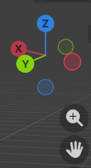
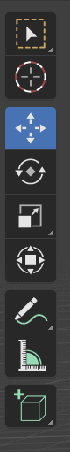

建模->布光->材质->渲染
10常用建模操作新建文献-常规
初始要素| 控制视图 | |
| 按住鼠标中键并拖动鼠标 | 360°旋转视图 |
| Shift+鼠标中键拖动 | 平移视图 |
| 滚动鼠标滚轮 | 放大/缩小视图 |

下面是相机视角
再下面是正交视图/透视视图转换

第三个工具-移动
点击模型出现三个轴：蓝-z、绿-y、红-x
第四个工具-旋转
第五个工具-缩放
| 删除物品 | Delete |
| 新建物品 | Shift + A |
| 隐藏物品 | H |
| 隐藏物品（反选） | Shift + H |
| 显示物品 | Alt + H |
| G | 移动 |
| S | 缩放 |
| R | 旋转 |
| Shift + D | 移动并复制物体 |
| ... + 鼠标中键 | 沿坐标轴... |
| ... + X/Y/Z | 沿X/Y/Z轴... |
| Alt + ... | 撤销所有... |
| 1（小键盘） | 正视图 |
| 7 | 顶视图 |
| 3 | 右视图 |
| 9 | 反转视图 |
| 2 | 往下15° |
| 4 | 往左15° |
| 6 | 往右15° |
编辑->偏好设置->文件路径->资产库
Z + 移动鼠标
选中没有材质的物品->按住shift选中需要复制材质的物品->Ctrl + L->材质